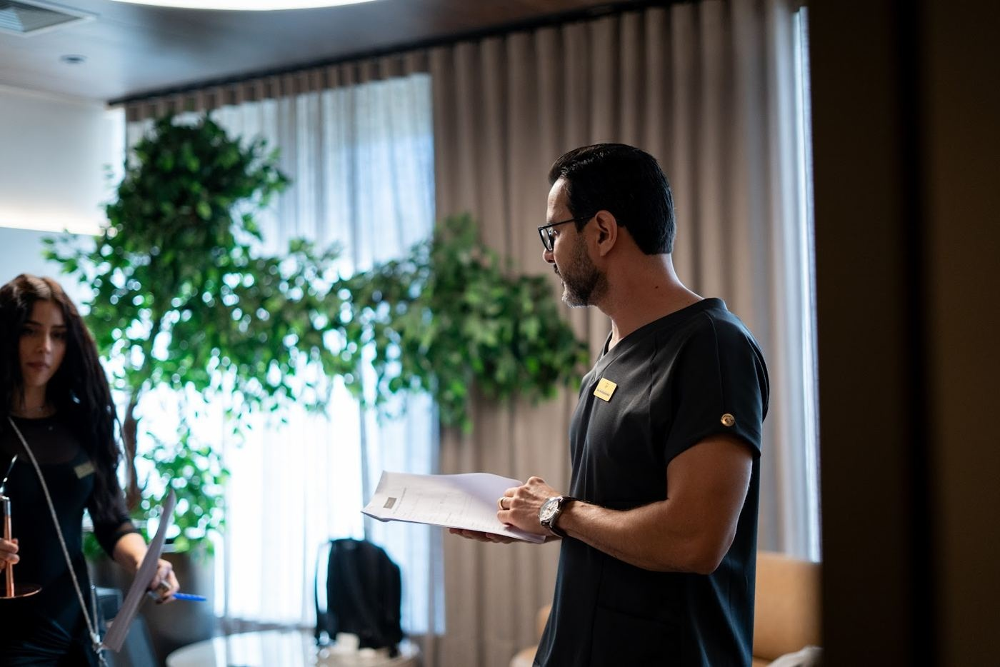

Dia 01 · 04 dez
Ver com mais intenção
Leitura e planejamento como ponto de partida para uma conversa Full Face.
Observar · organizar
Três dias Full Face para olhar, planejar e praticar com intenção — em uma turma desenhada para profundidade, não volume.
Além do Óbvio é uma experiência presencial de 3 dias Full Face, orientada para quem quer levar o olhar clínico e a execução para uma conversa mais precisa.
O centro da imersão é o que sustenta uma decisão: leitura, planejamento e prática com pacientes reais.
Ritmo e proximidade para acompanhar cada etapa com atenção.
A experiência sai do abstrato e entra no contexto do atendimento.
Tempo para observar conexões em vez de colecionar fragmentos.
Quando o caso pede clareza, repetir o óbvio não é uma resposta.
A imersão foi estruturada como uma jornada: construir repertório, tornar a leitura explícita e colocar o raciocínio em prática, lado a lado.
Ver a jornada dos 3 dias ↘Uma imersão que aproxima palco, conversa, planejamento e prática em um mesmo percurso.




Compare o tipo de experiência que você procura antes de reservar uma das 12 vagas.
A estrutura acompanha a sua decisão clínica do primeiro olhar até a prática — sem tratar cada etapa como algo separado.
Leitura e planejamento como ponto de partida para uma conversa Full Face.
Uma jornada para aproximar critério, sequência e execução.
Prática com pacientes reais dentro do contexto construído ao longo da imersão.
“A experiência reorganizou a forma como eu penso antes de começar.”
“Não saí com uma fórmula. Saí com perguntas mais precisas.”
“O valor esteve na construção de uma visão inteira, não em uma resposta pronta.”
Marque o que faz sentido para você. Ao final, sua resposta acompanha a conversa com o time comercial.
Uma estrutura fechada para sustentar a experiência de 3 dias Full Face.
Informações de investimento e disponibilidade serão apresentadas pelo time comercial.
Além do Óbvio acontece nos dias 4, 5 e 6 de dezembro, em São Paulo.
É uma imersão presencial de 3 dias Full Face, com prática com pacientes reais e condução do Dr Ritchie.
A turma tem 12 vagas.
Use um dos botões de conversa. O time comercial dará continuidade pelo WhatsApp e compartilhará as informações de disponibilidade.
4, 5 e 6 de dezembro. Uma imersão presencial de 3 dias Full Face, com prática com pacientes reais e Dr Ritchie.